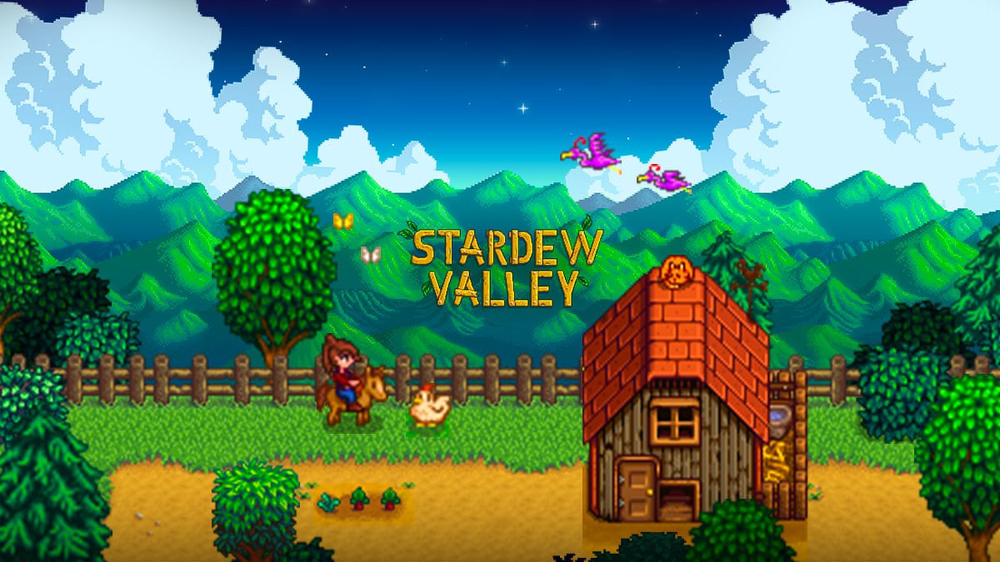

Novedades en proximas consolas
Las principales empresas de videojuegos han anunciado el desarrollo de la próxima generación de consolas, prometiendo gráficos de última generación y un rendimiento mejorado. Los jugadores están ansiosos por conocer más detalles sobre estas emocionantes nuevas plataformas.

Exito de un juego indie
Un juego independiente sorprendió a la comunidad de juegos al convertirse en un éxito inesperado. "Stardew Valley" ha cautivado a los jugadores con su innovador enfoque y estilo artístico único, demostrando una vez más el poder de la creatividad en la industria.

Lanzamiento de un esperado título AAA
Después de años de anticipación, el esperado juego "Starfield" finalmente se lanzó. Con impresionantes gráficos, una historia envolvente y una jugabilidad sólida, ha estado recibiendo elogios de la crítica y ha atraído a millones de jugadores en todo el mundo.
Aumento de los eSports
Los deportes electrónicos siguen en alza, con cada vez más inversión y patrocinio de grandes marcas. Las competiciones de eSports están atrayendo a audiencias masivas y se están convirtiendo en una parte integral de la cultura de los juegos.

Cierre de un estudio de desarrollo
Lamentablemente, el estudio de desarrollo EA anunció su cierre debido a dificultades financieras. Esto pone de manifiesto los desafíos que enfrentan muchas empresas en la industria de los videojuegos, a pesar de su "pasión y creatividad".